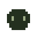

Fase 1: POO con Constructor (__construct) y Sesiones

En src/Tamagotchi.php, el método especial
__construct() inicializa cada mascota con valores seguros:
edad en 0, hambre en 80, felicidad en 80, y calcula automáticamente que inicia en etapa
Bebé y con ánimo Feliz.